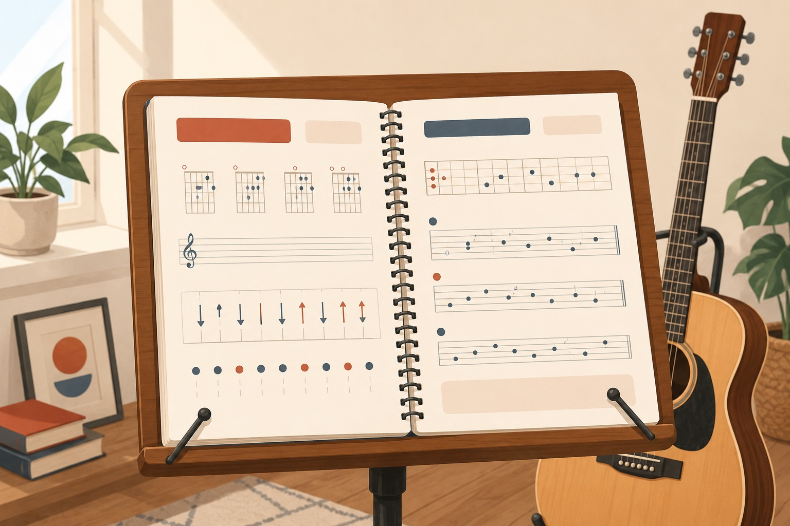

Guitar · Practice Reference
CAGED Chords &
Pentatonic Scales
A small, focused book to keep open on the music stand while you play. Left page — the diagram and tab you look at. Right page — terse notes: the shape, when to use it, and one practice tip.

A clean, warm editorial illustration of an open spiral-bound guitar practice book resting on a wooden music stand, an acoustic guitar leaning just behind it, soft daylight. Flat vector style, cream paper, muted brick-red and slate accents, generous whitespace, no text baked in. Target ~1200×800px, 3:2 landscape; keep the subject centred with safe margins — it is letterboxed into a 3:2 box.
Generate this with your image agent, then drop the file here.
Read this first
Open CAGED chords (C·A·G·E·D)
- 02C major (open) — “C” shape
- 03A major (open) — “A” shape
- 04G major (open) — “G” shape
- 05E major (open) — “E” shape
- 06D major (open) — “D” shape
Movable CAGED barre shapes
- 07C-form barre (movable)
- 08A-form barre (movable)
- 09G-form barre (movable)
- 10E-form barre (movable)
- 11D-form barre (movable)
Minor pentatonic — the five boxes
Major pentatonic & the blues
Quick reference